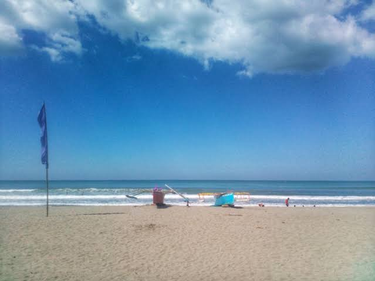
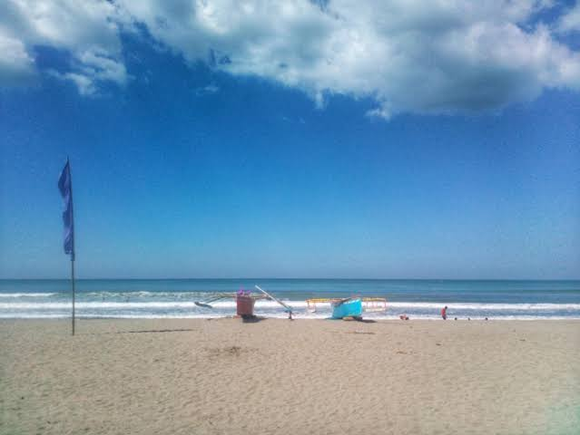

Bonuan blue beach-Bonuan Blue Beach or commonly known as Tondaligan Beach is located at Bonuan Tondaligan, Dagupan City. It is one of the most popular beaches here in Pangasinan. Most of us already heard some negative comments about this beach. But hey! The beach has been rehabilitated and now it is different from the Bonuan Blue Beach that is on our mind. This place is a good place for picnics and relaxation. It is clean and well-organized. There is a children’s park that kids will surely love. It’s just a minutes away from the city proper. See more in Bonuan blue beach
.jpeg)
.jpg)
Tondaligan beach-Tondaligan Blue Beach is one of the most accessible beaches in Pangasinan and is located in Dagupan City which is also
known as the Bangus (Milkfish) Capital of the Philippines. It may not have a white sand like that of Tondol Beach in Anda, but it’s close
proximity from the city proper plus the fine grey sands and pristine clear waters make it one of the most popular beaches in the said province.
See more in Tondaligan beach
.jpeg)
.jpeg)
Tondol beach-Tondol Beach is located at the northern tip of Anda, an island municipality that used to be accessible only by boat across
the narrow Catubig Channel. In the early 1990s, a bridge across the channel was constructed to connect the island to Brgy. Tara, Bolinao, Pangasinan.
It became a favorite among tourists because of the long shallow nature of the beach. Tanduyong Island is almost a kilometer away which can be reached
on foot during low tide. It’s best to visit Tondol Beach during the summer or dry months and most especially during low tide for you to experience
and enjoy the beauty of the beach.
Is also one of the best beaches in Pangasinan. It has a long and vast sandbar that can be explored during low tide especially early in the morning.
See more in Tondol beach

.jpeg)
Saud beach-This beach has been dubbed “the Boracay of the North” because of its perfect white sands and picturesque blue waters, but this gem
of the Philippines is what Boracay used to be before commercial tourism took over.
If you're searching for Southeast Asian beach bliss, super-mellow Saud Beach on the island of Luzon is a sure thing,” suggests T+L writer Anne Olivia
Bauso. “Its white sand pitches gradually into the clear-as-glass water, like a real-world example of a zero-entry swimming pool.” Bauso even listed a
few musts, should you take her up on her reco. “Swim in the peaceful waves, lunch under a thatch-roof cabana under the palms, or hire an outrigger for
excursions on the water.
See more in Saud beach


Patar beach-Patar Beach is a popular destination in Pangasinan because of its mesmerizing beauty.
This public beach boasts a long coast of cream fine sand and crystal clear waters available for everyone.
See more in Patar beach